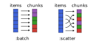

ChunkSplitters.jl
ChunkSplitters.jl facilitates the splitting of a given list of work items (of potentially uneven workload) into chunks that can be readily used for parallel processing. Operations on these chunks can, for example, be parallelized with Julia's multithreading tools, where separate tasks are created for each chunk. Compared to naive parallelization, ChunkSplitters.jl therefore effectively allows for more fine-grained control of the composition and workload of each parallel task.
Working with chunks and their respective indices also improves thread-safety compared to a naive approach based on threadid() indexing (see PSA: Thread-local state is no longer recommended).
In ChunkSplitters version 2.1 the iteration with chunks returns the ranges of indices only. To retrieve the chunk indices, use enumerate(chunks(...)). Additionally, the number of chunks and the split type of chunks are assigned with keyword arguments n, and split.
This change is not breaking because the legacy interface (of version 2.0) is still valid, although it is no longer documented and will be deprecated in version 3.0.
Installation
Install with:
julia> import Pkg; Pkg.add("ChunkSplitters")The chunks iterator
The main interface is the chunks iterator, and the enumeration of chunks, with enumerate.
chunks(array::AbstractArray; n::Int, size::Int, split::Symbol=:batch)This iterator returns a vector of ranges which indicates the range of indices of the input array for each given chunk. The split parameter is optional. If split == :batch, the ranges are consecutive (default behavior). If split == :scatter, the range is scattered over the array.
The different chunking variants are illustrated in the following figure:

For split=:batch, each chunk is "filled up" with work items one after another such that all chunks hold approximately the same number of work items (as far as possible). For split=:scatter, the work items are assigned to chunks in a round-robin fashion. As shown below, this way of chunking can be beneficial if the workload (i.e. the computational weight) for different items is uneven.
The chunks can be defined by their number n, or by their size size, in the call to the chunks method. If n is set, the chunks will have the most even distribution of sizes possible, while if size is set, the chunks will have a constant size, except for possible last remaining chunk.
Defining the chunks with size was introduced in version 2.3.0, and is only compatible with the :batch chunking option.
Basic interface
Let's first illustrate the chunks returned by chunks for the different chunking variants:
julia> using ChunkSplitters
julia> x = rand(7);
julia> for inds in chunks(x; n=3, split=:batch)
@show inds
end
inds = 1:1:3
inds = 4:1:5
inds = 6:1:7
julia> for inds in chunks(x; n=3, split=:scatter)
@show inds
end
inds = 1:3:7
inds = 2:3:5
inds = 3:3:6
julia> for inds in chunks(x; size=4)
@show inds
end
inds = 1:1:4
inds = 5:1:7The chunk indices can be retrieved with the enumerate function, which is specialized for the ChunkSplitters structure such that it works with @threads:
julia> using ChunkSplitters, Base.Threads
julia> x = rand(7);
julia> @threads for (ichunk, inds) in enumerate(chunks(x; n=3))
@show ichunk, inds
end
(ichunk, inds) = (1, 1:1:3)
(ichunk, inds) = (2, 4:1:5)
(ichunk, inds) = (3, 6:1:7)Simple multi-threaded example
Now, let's demonstrate how to use chunks in a simple multi-threaded example:
julia> using BenchmarkTools
julia> using ChunkSplitters
julia> function sum_parallel(f, x; n=Threads.nthreads())
t = map(chunks(x; n=n)) do inds
Threads.@spawn sum(f, @view x[inds])
end
return sum(fetch.(t))
end
julia> x = rand(10^8);
julia> Threads.nthreads()
12
julia> @btime sum(x -> log(x)^7, $x);
1.353 s (0 allocations: 0 bytes)
julia> @btime sum_parallel(x -> log(x)^7, $x; n=Threads.nthreads());
120.429 ms (98 allocations: 7.42 KiB)Of course, chunks can also be used in conjunction with @threads (see below).
Shared buffers: using enumerate
If shared buffers are required, the enumeration of the buffers by chunk using enumerate is useful, to avoid using the id of the thread. For example, here we accumulate intermediate results of the sum in an array chunk_sums of length n, which is later reduced:
A simple @threads-based example:
julia> using ChunkSplitters, Base.Threads
julia> x = collect(1:10^5);
julia> n = nthreads();
julia> chunk_sums = zeros(Int, n);
julia> @threads for (ichunk, inds) in enumerate(chunks(x; n=n))
chunk_sums[ichunk] += sum(@view x[inds])
end
julia> sum(chunk_sums)
5000050000Using shared buffers like this can lead to performance issues caused by false-sharing: A thread writes to the buffer, invalidates the cache-line for other threads, and thus causes expensive restoration of cache coherence. The example above intends to illustrate the syntax to be used to index the buffers, rather than to suggest this a an optimal pattern for parallelization.
Lower-level getchunk function
The package also provides a lower-level getchunk function:
getchunk(array::AbstractArray, ichunk::Int; n::Int, size::Int, split::Symbol=:batch)that returns the range of indices corresponding to the work items in the input array that are associated with chunk number ichunk.
The chunks can be defined by their number, n, or by their size size.
For example, if we have an array of 7 elements, and the work on the elements is divided into 3 chunks, we have (using the default split == :batch option):
julia> using ChunkSplitters
julia> x = rand(7);
julia> getchunk(x, 1; n=3)
1:1:3
julia> getchunk(x, 2; n=3)
4:1:5
julia> getchunk(x, 3; n=3)
6:1:7
julia> getchunk(x, 1; size=3)
1:1:3And using split = :scatter, we have:
julia> using ChunkSplitters
julia> x = rand(7);
julia> getchunk(x, 1; n=3, split=:scatter)
1:3:7
julia> getchunk(x, 2; n=3, split=:scatter)
2:3:5
julia> getchunk(x, 3; n=3, split=:scatter)
3:3:6Example: getchunk usage
julia> using BenchmarkTools
julia> using ChunkSplitters
julia> function sum_parallel_getchunk(f, x; n=Threads.nthreads())
t = map(1:n) do ichunk
Threads.@spawn begin
local inds = getchunk(x, ichunk; n=n)
sum(f, @view x[inds])
end
end
return sum(fetch.(t))
end
julia> x = rand(10^8);
julia> Threads.nthreads()
12
julia> @btime sum(x -> log(x)^7, $x);
1.363 s (0 allocations: 0 bytes)
julia> @btime sum_parallel_getchunk(x -> log(x)^7, $x; n=Threads.nthreads());
121.651 ms (100 allocations: 7.31 KiB)